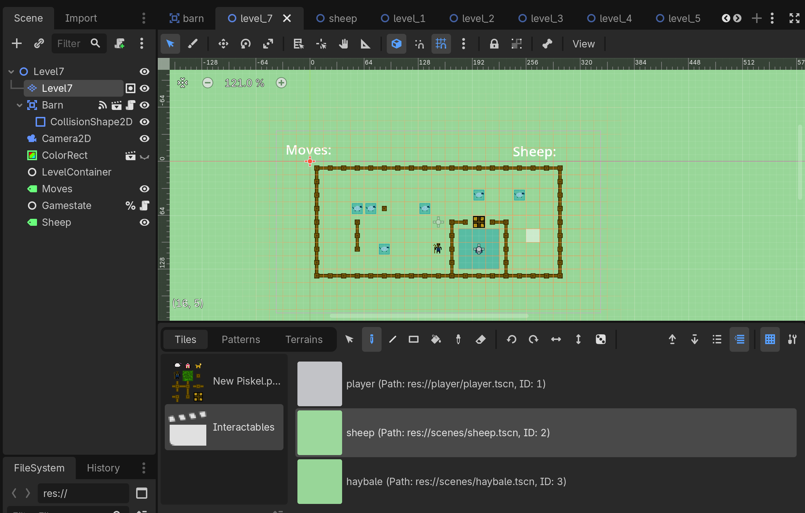
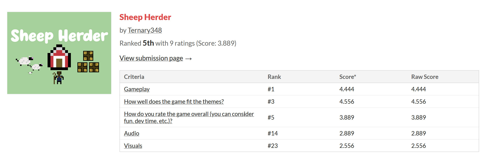

Sheep Herder
A Sokoban style game about herding sheep
Play in browser
Screenshots

Notes
Sheep was the theme of a game jam I looked into one weekend, and I landed on this three-hour jam. This jam was perfect for me to get in development practice while not taking that long since I was in college at the time.
Sheep Herder was not originally going to be Sheep Herder. I first wanted to make a game about counting sheep, but after thinking for a while, this Sokoban style game sounded a lot more fun. Additionally, I was fine taking on a more complex idea since I was working with one of my college roommates. However, my roommate had never used Godot or done a game jam before, so I made sure time was allotted for him to get acclimated to the engine.
The development process was relatively smooth. We were able to work together to make art, music, and of course, the game itself. We started with designing the art, and then moved to implementing it into the game. After the game was complete and level winning and changing worked, we only had about an hour left. We were able to create six levels and tacked on the one I used for testing as a seventh. With all of our time used, I compiled the game and submitted, and all that was left was to rate the games and wait for the results.
After the rating period ended, I was very happy with the results. Not only did we get 5th place overall, but we got the highest score in the gameplay category. Our biggest issues were with audio and art, which I am fine with, since we aren't artists and I was committed to creating our own assets instead of using public ones. But more than the rating, I was proud of the game we created. In less time than my first game, I created a product that was much more professional, fun, and silly! During this project I learned a lot about teaching and communicating ideas, since although my roommate was newer to game development, we were still able to work effectively and create a product we could both be proud of.
Jam results
